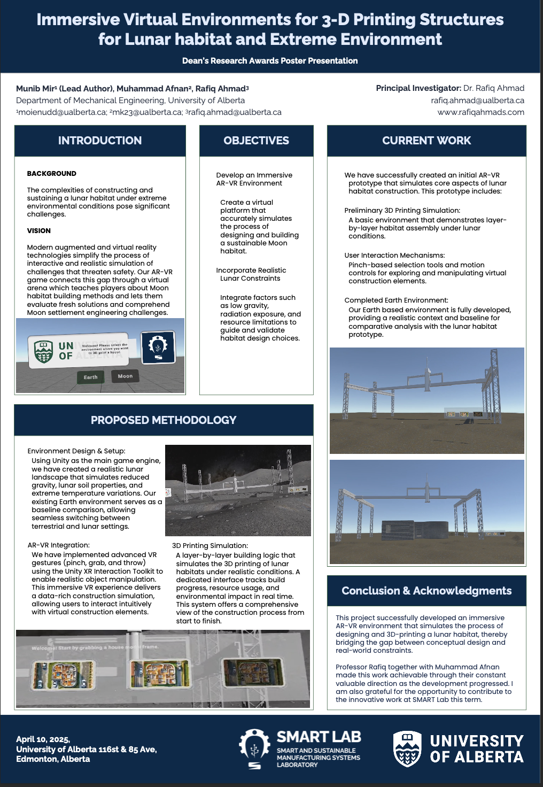

<!-- Experience Timeline (Tailwind enhanced) -->
<section class="experience-section relative pt-36 md:pt-40 pb-16">

  <div class="horizontal-timeline gap-8 md:gap-10">

    <!-- CARD 1 -->
    <div class="timeline-item">
      <div class="card group relative
                  shadow-[0_4px_18px_-4px_rgba(0,0,0,0.55)]
                  hover:shadow-[0_10px_28px_-6px_rgba(0,129,167,0.55)]
                  transition-all duration-300 ease-out
                  hover:-translate-y-1 hover:scale-[1.03]
                  ring-1 ring-white/10 hover:ring-[#0081A7]/60
                  animate-fade-in-up"
           style="animation-delay:.05s"
           data-intro="While working as a research assistant I helped design and implement a virtual-reality simulation that re-creates the layer-by-layer 3-D printing of a sustainable Moon habitat. Built in Unity with the XR Interaction Toolkit, the project lets users switch seamlessly between an Earth baseline and a high-fidelity lunar environment that features low-gravity physics, cratered terrain, regolith dust, and extreme thermal cycling."
           data-highlights="Real-time additive-manufacturing engine that deposits habitat layers and updates structural geometry on the fly.,Gesture-based controls (pinch, grab, throw) for natural interaction with construction elements and UI panels.,Dual-environment comparison to analyze resource usage, build time, and design viability under Earth vs. lunar constraints."
           data-conclusion="Working on this project helped me become more skilled in XR development, simulating physics and space-construction research—and proved that immersive technology can address tough engineering questions not found on Earth.">

        

        <h4 class="font-semibold tracking-tight">Virtual Reality Research Assistant</h4>
        <div class="date font-medium">Jan 2025 – Apr 2025</div>
      </div>
    </div>

    <!-- CARD 2 -->
    <div class="timeline-item">
      <div class="card group relative
                  shadow-[0_4px_18px_-4px_rgba(0,0,0,0.55)]
                  hover:shadow-[0_10px_28px_-6px_rgba(0,129,167,0.55)]
                  transition-all duration-300 ease-out
                  hover:-translate-y-1 hover:scale-[1.03]
                  ring-1 ring-white/10 hover:ring-[#0081A7]/60
                  animate-fade-in-up"
           style="animation-delay:.15s"
     data-intro="In my role as a software engineering intern at Modern West Tech Solutions (Riyadh), I strengthened compliance with changing ZATCA e-invoicing requirements by integrating and improving in-house VAT and corporate-tax automation modules within client ERP environments (SAP / Oracle customizations)."
     data-highlights="Adapted VAT calculation logic for multi‑rate and exemption edge cases cutting manual adjustment tickets by ~30%.,
      Expanded unit & integration test coverage of core tax logic to ~90% using pytest/unittest stabilizing release cycles.,
      Implemented supervised on‑premise deployments (Linux services + scheduled jobs) and standardized environment templates halving setup time.,
      Produced concise technical & user documentation plus training sessions for 3 client IT teams reducing post‑handover support requests."
     data-conclusion="My backend engineering and compliance automation skills improved as a result of this internship, which demonstrated how thorough testing, meticulous domain modelling, and unambiguous documentation facilitate reliable fintech delivery.">
        
        <h4 class="font-semibold tracking-tight">Software Engineering Intern</h4>
        <div class="date font-medium">May 2025 - Aug 2025</div>
      </div>
    </div>

  </div>
</section>

<!-- Modal Overlay & Content -->
<div id="modal-overlay" class="modal-overlay">
  <div class="modal-content">
    <span class="modal-close">&times;</span>
    <div class="modal-img">
      
    </div>
    <div class="modal-text">
      <h3 id="modal-title"></h3>
      <div class="date" id="modal-date"></div>
      <p id="modal-intro"></p>
      <ul id="modal-highlights"></ul>
      <p id="modal-conclusion"></p>
    </div>
  </div>
</div>

<style>
  html, body {
    font-family: "Space Grotesk","Noto Sans",sans-serif;
  }

  .experience-section,
  .experience-section * ,
  .modal-overlay,
  .modal-overlay * {
    font-family: "Space Grotesk","Noto Sans",sans-serif;
  }

  :root {
    --connector-length: 3rem;
    --card-width: 200px;
    --timeline-band-height: 520px;
  }

  .experience-section {
    min-height: calc(100vh - 4rem);
    display: flex;
    align-items: flex-start;
    justify-content: center;
    padding: 13rem 4rem 14rem;
    background: #121212;
  }

  .horizontal-timeline {
    position: relative;
    display: flex;
    justify-content: space-between;
    align-items: center;
    width: 100%;
    max-width: 1200px;
    height: var(--timeline-band-height);
    padding: 0 2rem; 
  }

  .horizontal-timeline::before {
    content: "";
    position: absolute;
    top: 50%; left: 0; right: 0;
    height: 2px;
    background: linear-gradient(90deg,
      rgba(255,255,255,0) 0%,
      rgba(255,255,255,0.25) 15%,
      rgba(255,255,255,0.25) 85%,
      rgba(255,255,255,0) 100%);
    transform: translateY(-50%);
    z-index: 1;
  }

  .timeline-item {
    position: relative;
    flex: 1;
    display: flex;
    justify-content: center;
  }

  .timeline-item::after {
    content: "";
    position: absolute;
    top: 50%; left: 50%;
    width: 14px; height: 14px;
    background: #0081A7;
    box-shadow: 0 0 0 4px rgba(0,129,167,0.25),
                0 0 12px 4px rgba(0,129,167,0.35);
    border-radius: 50%;
    transform: translate(-50%, -50%);
    z-index: 2;
  }

  .timeline-item .card {
    position: absolute;
    width: var(--card-width);
    left: 50%;
    transform: translateX(-50%);
    background: rgba(255,255,255,0.05);
    backdrop-filter: blur(8px);
    border: 1px solid rgba(255,255,255,0.15);
    border-radius: 0.75rem;
    padding: 0.55rem 1rem 1rem;
    text-align: left;
    cursor: pointer;
    z-index: 3;
    overflow: hidden;
  }

  .timeline-item .card h4 {
    margin: 0 0 0.5rem;
    font-size: 1rem;
    color: #fff;
  }

  .timeline-item .card .date {
    font-size: 0.85rem;
    color: rgba(255,255,255,0.65);
    margin-bottom: 0.25rem;
  }

  .timeline-item .card::after {
    content:"";
    position:absolute;
    inset:0;
    pointer-events:none;
    background:
      linear-gradient(135deg,rgba(0,129,167,0.45),rgba(99,102,241,0.35),rgba(0,129,167,0.35));
    opacity:0;
    mix-blend-mode:overlay;
    transition:opacity .35s ease;
  }
  .timeline-item .card:hover::after { opacity:0.55; }

  .horizontal-timeline .timeline-item:nth-of-type(odd) .card {
    bottom: calc(100% + var(--connector-length));
  }
  .horizontal-timeline .timeline-item:nth-of-type(odd) .card::before {
    content: "";
    position: absolute;
    bottom: calc(-1 * var(--connector-length));
    left: 50%;
    width: 2px; height: var(--connector-length);
    background: linear-gradient(to bottom,rgba(255,255,255,0.25),rgba(255,255,255,0));
    transform: translateX(-50%);
    z-index: 1;
  }
  .horizontal-timeline .timeline-item:nth-of-type(even) .card {
    top: calc(100% + var(--connector-length));
  }
  .horizontal-timeline .timeline-item:nth-of-type(even) .card::before {
    content: "";
    position: absolute;
    top: calc(-1 * var(--connector-length));
    left: 50%;
    width: 2px; height: var(--connector-length);
    background: linear-gradient(to top,rgba(255,255,255,0.25),rgba(255,255,255,0));
    transform: translateX(-50%);
    z-index: 1;
  }

  @media (max-width:600px){
    .horizontal-timeline { flex-direction: column; padding: 0 }
    .horizontal-timeline::before { display: none }
    .timeline-item { flex: none; width: 100%; margin: var(--connector-length) 0 !important }
    .timeline-item .card {
      position: relative;
      transform: none;
      left: auto; top: auto; bottom: auto;
      margin-top: var(--connector-length);
    }
    .timeline-item .card::before { display: none }
  }

  .modal-overlay {
    display: none;
    position: fixed;
    inset: 0;
    background: rgba(0,0,0,0.6);
    backdrop-filter: blur(4px);
    -webkit-backdrop-filter: blur(4px);
    align-items: center;
    justify-content: center;
    padding: 2rem;
    z-index: 100;
    transition: opacity 0.3s ease;
    opacity: 0;
  }
  .modal-overlay.active { display: flex; opacity: 1; }

  .modal-content {
    background: #1e1e1e;
    border-radius: 1rem;
    width: 95vw;
    max-width: 900px;
    max-height: 80vh;
    display: flex;
    overflow: hidden;
    position: relative;
    box-shadow: 0 8px 24px rgba(0,0,0,0.25);
    transform: translateY(-20px);
    transition: transform 0.3s ease, box-shadow 0.3s ease;
  }
  .modal-overlay.active .modal-content { transform: translateY(0); }
  .modal-content:hover {
    transform: translateY(-10px) scale(1.01);
    box-shadow: 0 14px 40px -6px rgba(0,0,0,0.4);
  }
  .modal-close {
    position: absolute;
    top: 1rem; right: 1rem;
    font-size: 1.5rem;
    color: #666;
    cursor: pointer;
    transition: color 0.2s ease;
    z-index: 2;
  }
  .modal-close:hover { color: #fff; }
  .modal-img {
    flex: 0 0 45%;
    background: #2a2a2a;
    display: flex;
    align-items: center;
    justify-content: center;
  }
  .modal-img img { max-width: 100%; max-height: 100%; object-fit: contain; }
  .modal-text {
    flex: 1;
    padding: 1rem 2.5rem 2.5rem;
    color: #f0f0f0;
    overflow-y: auto;
  }
  .modal-text h3 {
    margin: 0 0 0.5rem;
    font-size: 1.75rem;
    color: #fafafa;
  }
  .modal-text .date {
    font-size: 0.9rem;
    color: #aaa;
    margin-bottom: 1rem;
  }
  #modal-intro { margin-bottom: 1rem; }
  #modal-highlights {
    list-style: disc;
    list-style-position: outside;
    margin: 0.5rem 0 1rem;
    padding-left: 1.25rem;
  }
  #modal-highlights li { margin-bottom: 0.5rem; }
  #modal-conclusion { margin-top: 0; }

  @media (max-width:600px){
    .modal-content { flex-direction: column; width: 95vw; max-height: 90vh; }
    .modal-img { height: 200px; flex: none; }
    .modal-text { padding: 1.5rem; }
  }

  @keyframes fade-in-up {
    from { opacity:0; transform:translate(-50%, 14px); }
    to   { opacity:1; transform:translate(-50%, 0); }
  }
  .animate-fade-in-up {
    animation: fade-in-up .7s cubic-bezier(.4,0,.2,1) forwards;
    opacity:0;
  }
  .horizontal-timeline .timeline-item:nth-of-type(even) .animate-fade-in-up {
    animation-name: fade-in-up-even;
  }
  @keyframes fade-in-up-even {
    from { opacity:0; transform:translate(-50%, -14px); }
    to   { opacity:1; transform:translate(-50%, 0); }
  }
</style>
